back to the original page
back to the original page
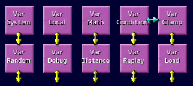
Script commands
variable group
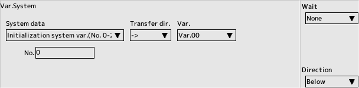
System
Reads and writes what the system is using to a variable
Switch between reading and writing in the transfer direction
- System variable to be initialized
- 0-255
- Number of system variables to be stored in
- 0-255
- Number of characters eligible for a quick turn in the screen (read-only)
Attribute flag in character editing Counts the number of characters that are being checked for "Fast Track Target"
Count all characters that appear
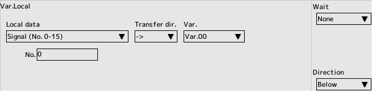
Local
Mainly read and write the content of characters and players in variables
Those with read-only are read-only
Switch between reading and writing in the transfer direction
- Signals (numbers 0-15)
Signal data held by the character
- X-coordinates
A character's absolute coordinates X
- Y-coordinate
A character's absolute coordinate Y
- X movement amount (x100)
100 times the character's movement amount (internal) X
- Y movement amount (x100)
100 times the character's movement amount (internal) Y
- Gauge value (numbers 0-2)
A gauge value held by the player
- Physical Strength
Character's Physical Strength
- Maximum Strength
Initial value of character's health
- Number of Bombs
Number of Bombs held by the player
- Remaining Machines
Remaining Machines Held by the Player
- Score
Score kept by the player
- Are you inside the wall? (Read-only)
Is the character in the wall hit decision? 0.. No 1. Yes
- Player type
Set the result of player selection No.
- Speed Level
Player's Speed Level
- Continue count
Number of continuations left for a player to keep
- Main Weapon Index
Main weapon in use by the player
- Sub-weapon Index
Sub-weapons in use by the player
- Bomber Index
Bomber in use by player
- Optional Index
Optional Weapon in use by the player
- Counter Index
Counter Weapon in use by the player
- Main Weapon Level
Player's Weapon Level
- Sub-weapon Level
Player's Weapon Level
- Bomber Level
Player's Weapon Level
- Optional Level
Player's Weapon Level
- Counter Level
Player's Weapon Level
- Direction of movement 0-65535
Direction of movement, 0-360 degrees converted to 0-65535
- Image orientation 0-65535
Value converted from 0-360 degrees to 0-65535 in the direction the image faces
- Attack Power
Attack Power held by a character
- Defensive Power
Defensive Power held by a character
- Speed (x100)
100 times the amount of movement of the character
- Absolute Coordinates X in Childhood (Read-Only)
In-Screen Absolute Coordinates X in Childhood
- Absolute Coordinates Y in Childhood (Read-Only)
In-Screen Absolute Coordinates Y in Childhood
- Scale factor (65536=equal magnification)
Character's scale factor, the greater the magnification
- Absolute movement X for child (x100, read-only)
100 times the amount of movement X for child vs. screen
- Absolute movement Y as a child (x100, read-only)
100 times the amount of movement Y vs. the screen as a child
- Absolute movement direction for child (0 to 65535, read-only)
Value for child vs. screen movement direction, 0 to 360 degrees converted to 0 to 65535
- Collision rectangle display
When the value is not 0, the display turns ON
- Name Entry ? (read-only)
If a name is entered on the ranking screen, that name is non-zero
- Attack flag bits
The content of the bit for each item on the attack side that appears on the Custom Edit screen in character editting
- Defence flag bits
The content of the bit for each item on the defence side that appears on the Custom Edit screen in character editting
- Ranking Additional Info 'A' (Default..0 Loaded as initial value during replay playback)
Additional information for display in ranking A
- Ranking Additional Info 'B' (Default..0 Loaded as initial value during replay playback)
Additional information for display in ranking B
- Ranking Additional Info 'C' (Default..0 Loaded as initial value during replay playback)
Additional information for display in ranking C
- Replay ID(Default..-1)
Specify a replay ID to save. Scores with the same ID will be erased
- Current scene no. Negative..Fixed scene Positive..Main stage
Get the scene number currently in play (Read-Only)
- 0-..Main stage in game settings
- -1..Title
- -2..Ranking
- -3..Name input
- -4..Select
- -5..Opening
- -6..Ending
- -7..Debug
- -8..Other
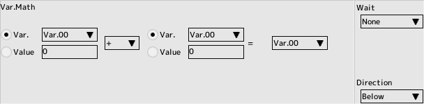
Math
Perform arithmetic, shift and logic operations
All signed operations.
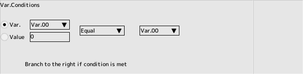
Conditions
Compares a variable to a variable or a number and branches to the right if the conditions are met
- The variable
specifies a variable to be compared
- Numeric value
Numeric value to compare
- Comparison of the top two conditions and branch to the right if the condition is true
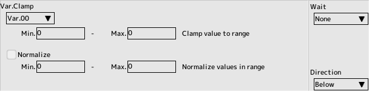
Clamp
Clamp and normalize the contents of a variable
- Minimum value, maximum value
Selected value to clamp
- Check to normalize further
check if you want to normalize
- Minimum value, maximum value
Selected value to be normalized
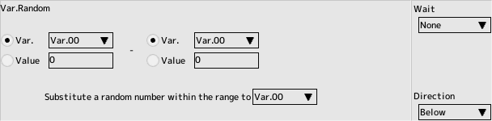
Random
Get a random number in the specified range as a variable.
- Specify a range
variable or numeric range
- Assigning a random number in the range
- Select a variable to get a random number
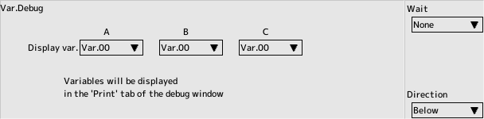
Debug
Displays the contents of the variable in the debug window
- A,B,C
Up to three variables can be displayed simultaneously
- Invalidate
Turn off output
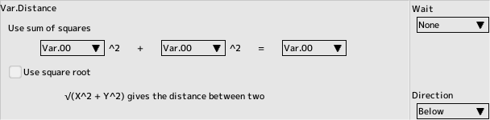
Distance
Find the distance between two points.
- Get more square roots
Check if you want more distance
When you want to find the distance between Character A and Character B
√((AX-BX)^2 + (AY-BY)^2)
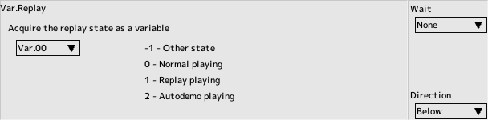
Replay
Get the replay state as a variable.

Load
Obtains information on the current character.
- Get the total value of the load factor
The load factor set in the character edit
- Get the normal number of characters
The character editing attribute flag "Important characters" is unchecked
- Get the number of important characters
- The attribute flag "important characters" for character editing is checked
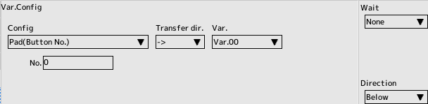
Config
Reads and writes the contents of the config to variables
Read-only configuration is read-only.
Switches between read and write in transfer direction
- Pad (button number)
Pad buttons and directions to assign to function buttons
- Keyboard (button number)
Keys to assign to function buttons
- Language (default ... -1)
Toggle language setting
- BGM volume (0-100)
Music volume
- SE volume (0-100)
Sound effect volume
- Window magnification (0-8)
Window size
- V-Sync
Affects delay
- Fullscreen
Full Screen mode
- Analog sensitive
Analog lever sensitive
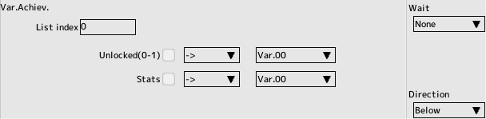
Achiev.
Gets and sets the unlocked status and progress status of achievements when STEAM linkage is enabled in the game settings
Do not keep sending every frame.
- List index
Index of the list of achievements in game settings
- Unlocked status (0-1)
1 if the achievement is unlocked, 0 otherwise
- Progress
Gets or sets the value if there is an intermediate step in the release of an achievement
- Check the box to activate the item and then set the transfer direction
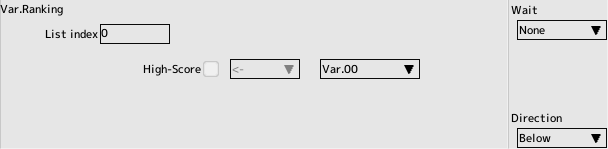
Ranking
Send high scores when STEAM linkage is enabled in the game settings
Do not keep sending every frame.
- List Index
Index of the list of ranking in game settings
- High-Score
Send high score
- Check the box to activate the item
Transfer
Collectively transfer values between variables (characters) and system variables
- Source,Destination
Select the type of variable
- No.
Range depends on variable type
- Child ID
Specified when the variable type is child
- Index
Check the box to add to the specified variable number
Specify the variable to be used for addition
- Quantity
Enter the number of variables to transfer
Specifying a loop variable as an index makes it possible to refer to variables sequentially in the loop process
Back to the top of the page